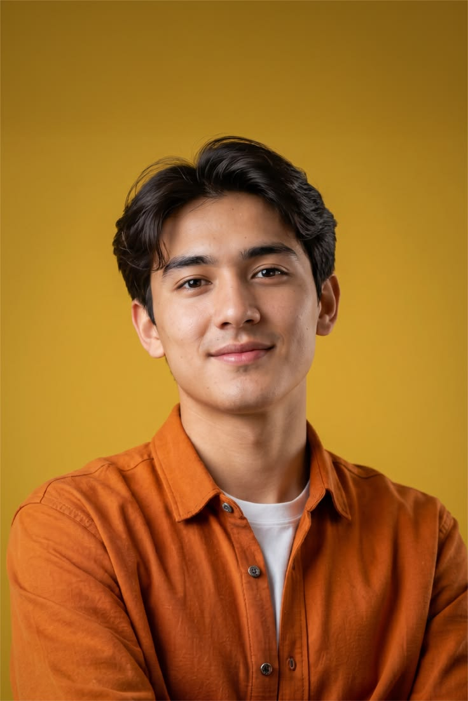
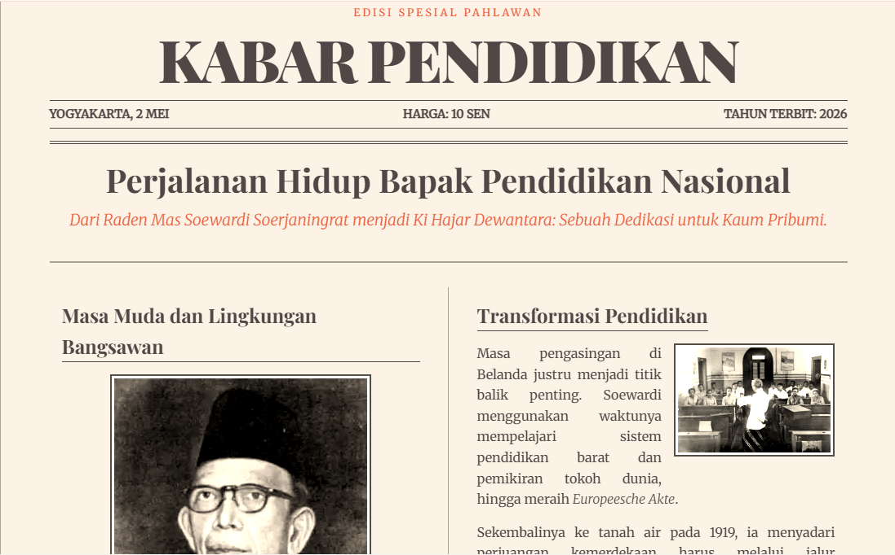
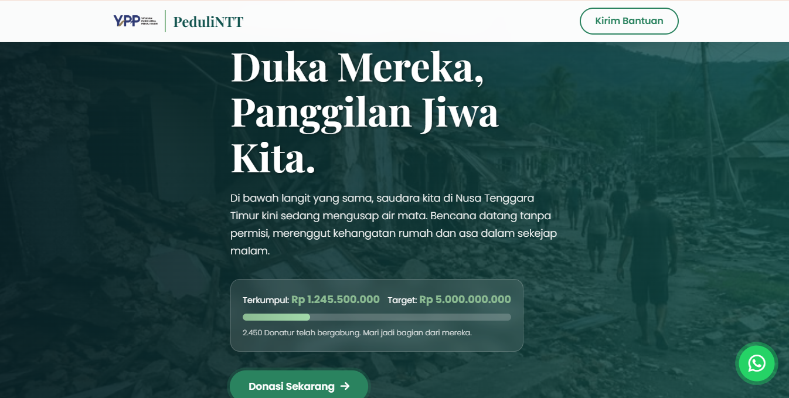
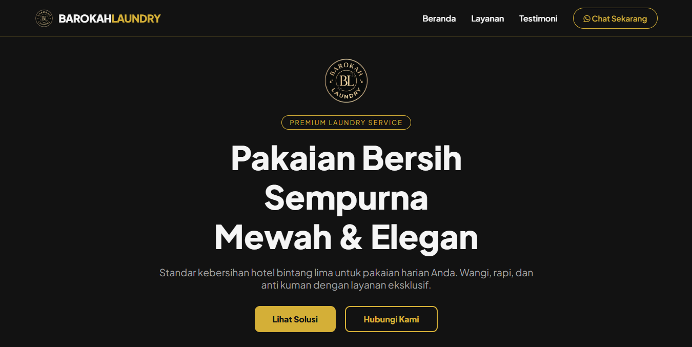
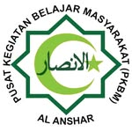

Menggabungkan logika kode, presisi instruksi AI, dan kekuatan disiplin hafalan untuk menciptakan solusi digital yang itqan.
Lihat Karya Saya
"إن الله يحب إذا عمل أحدكم عملا أن يتقنه"
"Sesungguhnya Allah mencintai jika seseorang di antara kalian mengerjakan suatu pekerjaan, ia melakukannya secara itqan (profesional, rapi, dan sempurna)."
— HR. Al-BaihaqiBagi saya, lembar-lembar hafalan dan baris-baris kode adalah dua bahasa yang berbicara tentang hal yang sama: presisi dan keindahan struktur. Di tengah kesibukan menjaga setiap bait kata dalam ingatan, coding dan prompt engineering hadir bukan sebagai pengalih perhatian, melainkan sebagai ruang di mana logika yang teratur itu mewujud nyata.
Saya menikmati proses membangun web dan meretas instruksi AI, karena bagi saya, melatih pikiran untuk mengingat dan melatih mesin untuk berpikir adalah seni berkomunikasi dalam bentuknya yang paling murni.

Direktori digital interaktif sebagai pusat arsip sejarah perjuangan bangsa. Sarana pendidikan yang memudahkan pengguna menelaah biografi pahlawan nasional.

Landing page galang dana resmi dengan pendekatan storytelling visual, tracker donasi transparan, dan integrasi WhatsApp untuk respons tanggap darurat.

Company profile profesional berbasis konversi bisnis. Menyajikan copywriting solusi masalah dan social proof untuk membangun citra layanan premium.

Siswa Kelas 12 | Fokus & Disiplin Akademik